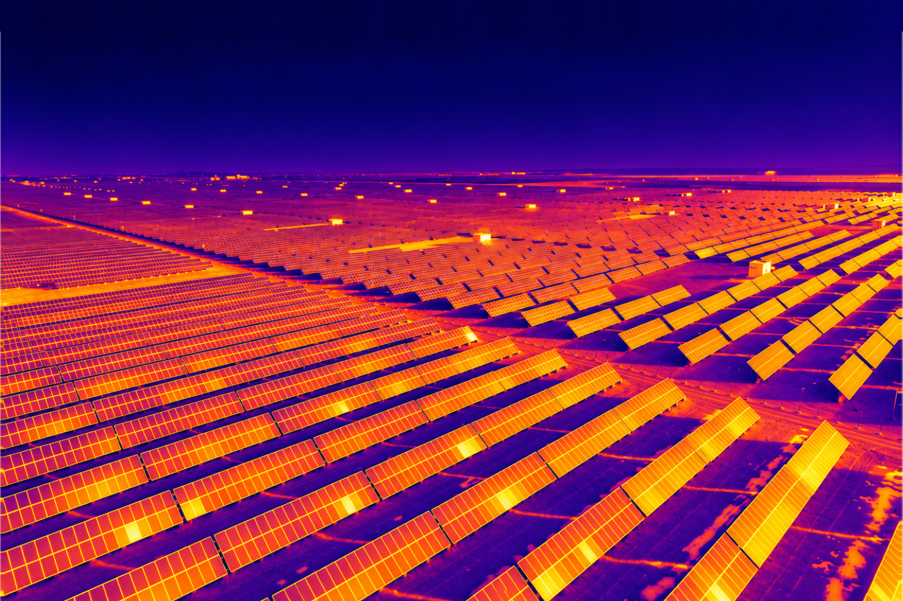

Un site.
Une multitude de situations.
Surveiller, inspecter, cartographier, suivre. Une capacité aérienne autonome au service de vos équipes.
Chaque usage part d'un besoin de terrain, pas d'une technologie : une zone mal couverte, une alerte à qualifier, un stock à mesurer.
Les six familles reposent sur les mêmes briques techniques : voir les capacités de la plateforme.
Surveiller davantage sans multiplier les rondes.
Les dispositifs fixes couvrent des points, rarement tout le site. FLEAT parcourt les zones qui comptent, à intervalles réguliers ou de manière continue.

La zone est survolée et observée en direct. Intervention si nécessaire, classement sinon.
Rondes de surveillance autonomes
Des itinéraires récurrents rejoués à l'identique, y compris hors horaires d'activité.
Détection et observation d'intrusions
La zone concernée est survolée et observée depuis les airs.
Surveillance de nuit
Vision adaptée aux faibles luminosités et capteur thermique.
Voir le risque avant l'incident.
Échauffement d'une armoire électrique, stockage en température, toiture dégradée : des signaux qui se voient mieux depuis les airs, et plus tôt.
Un écart de température est souvent le premier signe.
L'anomalie est repérée au passage du drone. La zone est ensuite vérifiée en connaissance de cause.
Contrôle des zones électriques
Armoires, postes, onduleurs : repérer un échauffement avant la panne.
Zones à risque et accès difficiles
Toitures, hauteurs, ouvrages : une vue exploitable sans exposer personne.
Appui aux équipes HSE
Des constats datés et localisés, exploitables dans vos analyses.


Inspecter sans monter sur place.
Mêmes zones, mêmes trajectoires, mêmes cadrages, aussi souvent que nécessaire.

Des vues répétables, au même cadrage.
Le drone rejoue la même trajectoire à chaque passage. Les images restent comparables entre elles.
Inspection visuelle
Zoom, photo et vidéo au même cadrage qu'au passage précédent.
Inspection thermique
Écarts de température sur les équipements sensibles.
Détection de changements
Porte ouverte, équipement déplacé, obstacle apparu.
Documentation
Chaque passage horodaté, localisé et conservé.
Transformer le site en information exploitable.
Une représentation aérienne actualisée, base commune aux équipes exploitation, sûreté et travaux.

Schéma de principe · calques issus des captures de mission.
Des images, puis des données
Cartographie 2D, modèles 3D et mesures exploitables : distances, surfaces, volumes.
Mesurer un stock plutôt que l'estimer.
Valeurs d'illustration · carrières, recyclage, matériaux, BTP.
Voir votre site évoluer dans le temps.
Même zone, même point de vue, dates différentes.


Suivi de chantier
Avancement documenté à chaque passage, partagé avec la maîtrise d'ouvrage.
Suivi de stocks
Volumes comparés d'un passage à l'autre, sans intervention au sol.
Timelapse de site
Plusieurs mois d'évolution restitués en quelques secondes.
Retrouver l'état d'une zone à une date donnée.
Chaque mission alimente un historique consultable, pas un dossier d'images isolées.

Voir avant d'envoyer quelqu'un sur place.
Une zone sélectionnée, une mission lancée, la situation observée en direct.

Schéma de principe.
Mission immédiate
Intrusion, départ de feu, alarme technique, accident, anomalie sur zone isolée.
Assistance aux équipes
Arriver sur zone en connaissant accès, ampleur et position.
Communication sur zone
Haut-parleur ou message vocal, selon le matériel.
Une plateforme. Plusieurs capacités.
Les six familles reposent sur les mêmes briques, activées progressivement selon vos priorités.
Écarts de température invisibles à l'œil.
Observer quand la luminosité baisse.
Ce que voit le drone, en temps réel.
Trajets récurrents rejoués à l'identique.
Aide à la détection et à la qualification.
Prévenir les équipes au bon moment.
Trace exploitable de chaque mission.
Un contexte spatial aux données.
Les changements, zone par zone.
Des observations aux décisions.
Des yeux mobiles sur les sites trop grands pour des capteurs fixes. L'autonomie sous contrôle.
Et si votre site pouvait être observé autrement ?
Nous étudions votre environnement pour identifier les cas d'usage réellement pertinents.